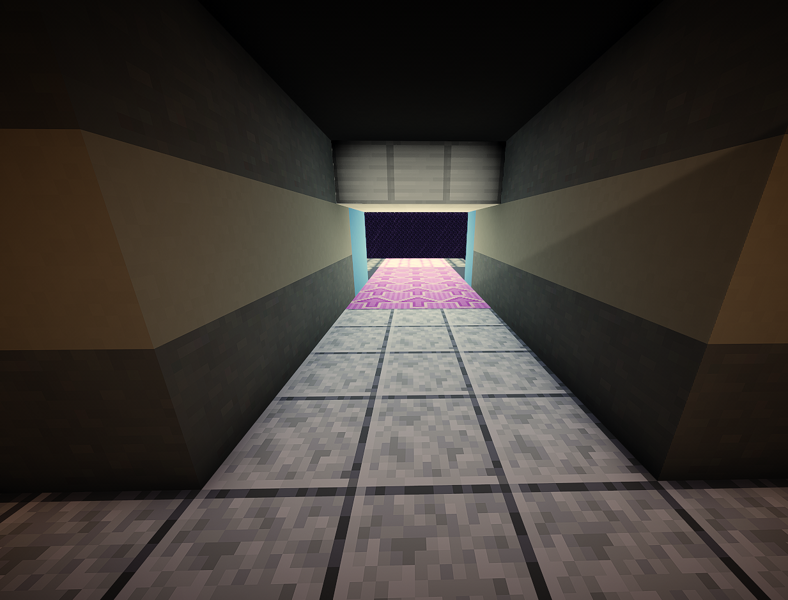

Control de Alimentación
El Control de Alimentación es el departamento encargado de gestionar el suministro de comida para los organismos mantenidos dentro de la cámara de simulación de Helix Prime.
Desde esta instalación se supervisan las reservas alimenticias, se programan las entregas y se controla la cantidad de recursos suministrados durante cada experimento.
La distribución de alimentos se realiza mediante una cinta transportadora especializada que conecta directamente con el recinto experimental, permitiendo introducir suministros sin alterar las condiciones del entorno.
En situaciones especiales, el personal autorizado puede solicitar el uso de la pinza mecánica principal controlada desde el Núcleo de Control. Este sistema permite transportar cargas de gran tamaño o introducir elementos que no pueden ser movidos mediante los sistemas convencionales de alimentación.
Gracias a estos mecanismos, Helix Prime puede mantener un suministro constante y seguro de recursos para todos los organismos en estudio.
